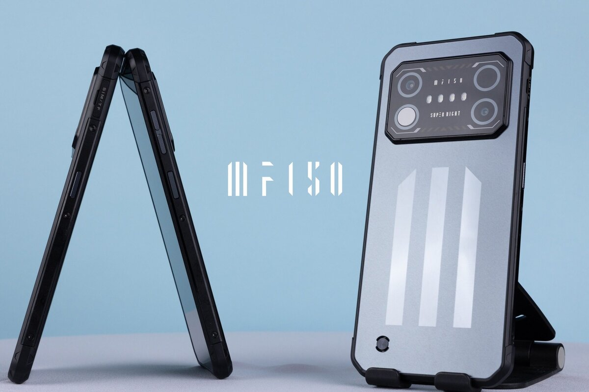

IIIF150 Air1 Ultra — прочный бюджетный телефон. Этот аппарат сочетает в себе возможности для экстремального использования благодаря надежному корпусу и функционал обычного Android-устройства.
Air1 Ultra может похвастаться рядом замечательных характеристик: батареей на 5000mAh с поддержкой быстрой зарядки 33W и чипсетом MediaTek Helio G99 с восьмиядерным процессором, созданным с использованием технологии 6nm от TMSC. Базовая конфигурация памяти составляет 256 GB + 8GB. Камеры в этом телефоне включают 64МП основную камеру и 20МП ночную камеру от SONY. Спереди устройства расположен 6,8-дюймовый дисплей с частотой обновления 120Hz. Как и все прочные телефоны, он имеет защиту IP68 и IP69K, сертификацию MIL-STD-819G, защитное стекло Corning Gorilla Glass и работает на операционной системе Android 12.
Дизайн Air1 Ultra красивый, с некоторыми приятными элементами, делающими его более привлекательным и премиальным. На передней панели имеется большой 6.8-дюймовый экран, а сзади — высококачественный пластик с тонк ой рамкой, обеспечивающей толщину всего 9.55 мм. Если спросить меня о качестве изготовления, то здесь нет причин для жалоб, поскольку IIIF150 всегда стремится предлагать высококачественные продукты пользователям по всему миру по доступным ценам. Так что дизайн и сборка IIIF150 Air1 Ultra весьма удовлетворяют.
IIIF150 Air1 Ultra – Водонепроницаемость IIIF150 Air1 Ultra облицован высококачественной синтетической резиной и имеет защитные стандарты IP68 и IP69K, что обеспечивает его устойчивость к пыли, царапинам, ударам и падениям, а также водонепроницаемость на глубине до 1,5 метра в течение 30 минут.